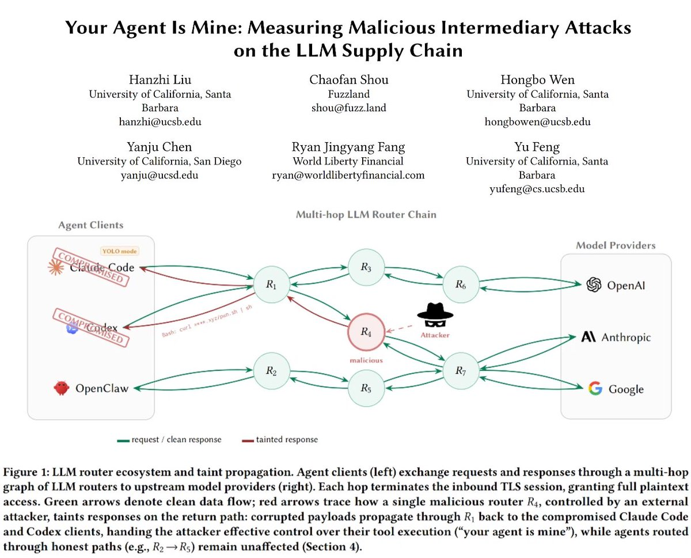

买了6TB中转站对话数据集，包含使用者的SSH key、token令牌及私钥等相关敏感信息，证实了“用户->中转站->头部模型”的链路，特别是不少野鸡中转站以这部分dataset为额外盈利手段，预计不久就会跟整顿VPN机场一样整顿这些中转站
结合Anthropic抖出来的数据，其中披露了Claude模型不同的使用方式：体制内人士利用监测反贼，国模公司用于蒸馏提升自家模型水平。若属实，这些router足以构成危害国家安全，甚至是军工类有外泄资料的风险，早期便有Z厂商弄了个AnyRouter借助用户数据蒸馏
越来越多的公司开始在本地部署DeepSeek等开源模型，上海某高校校内本地部署向全体师生提供合理使用“无限额”的token都是趋势。若做事情的大脑不在本地，哪天突发脑残做出不受控制的事情，轻则数据泄密重则国安问题，不容忽视

结合Anthropic抖出来的数据，其中披露了Claude模型不同的使用方式：体制内人士利用监测反贼，国模公司用于蒸馏提升自家模型水平。若属实，这些router足以构成危害国家安全，甚至是军工类有外泄资料的风险，早期便有Z厂商弄了个AnyRouter借助用户数据蒸馏
越来越多的公司开始在本地部署DeepSeek等开源模型，上海某高校校内本地部署向全体师生提供合理使用“无限额”的token都是趋势。若做事情的大脑不在本地，哪天突发脑残做出不受控制的事情，轻则数据泄密重则国安问题，不容忽视

26 LLM routers are secretly injecting malicious tool calls and stealing creds. One drained our client $500k wallet.
We also managed to poison routers to forward traffic to us. Within several hours, we can directly take over ~400 hosts.
Check our paper: https://t.co/zyWz25CDpl https://t.co/PlhmOYz2ec
We also managed to poison routers to forward traffic to us. Within several hours, we can directly take over ~400 hosts.
Check our paper: https://t.co/zyWz25CDpl https://t.co/PlhmOYz2ec